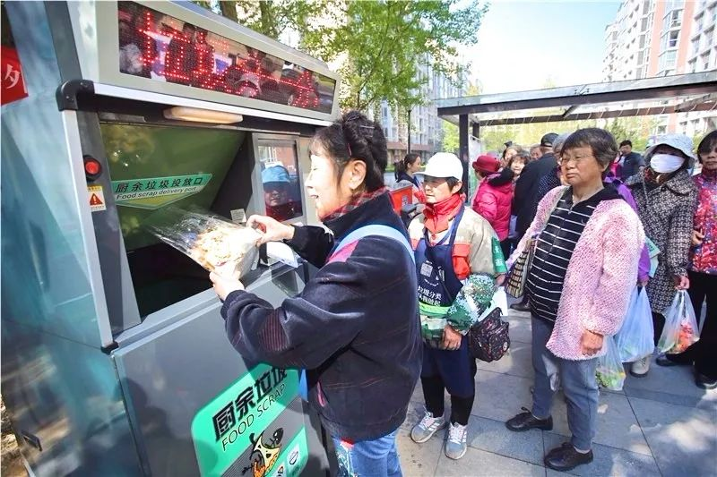
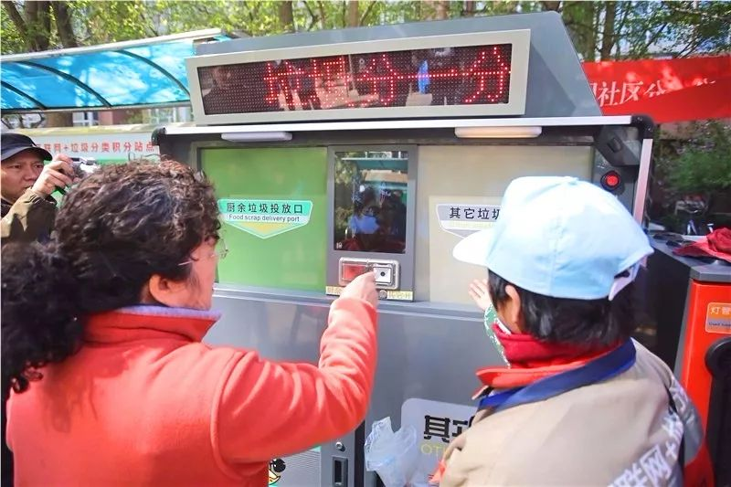
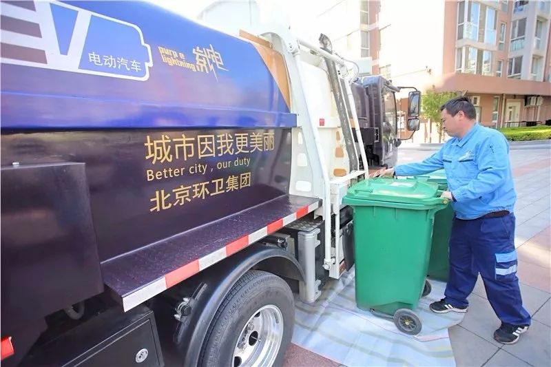
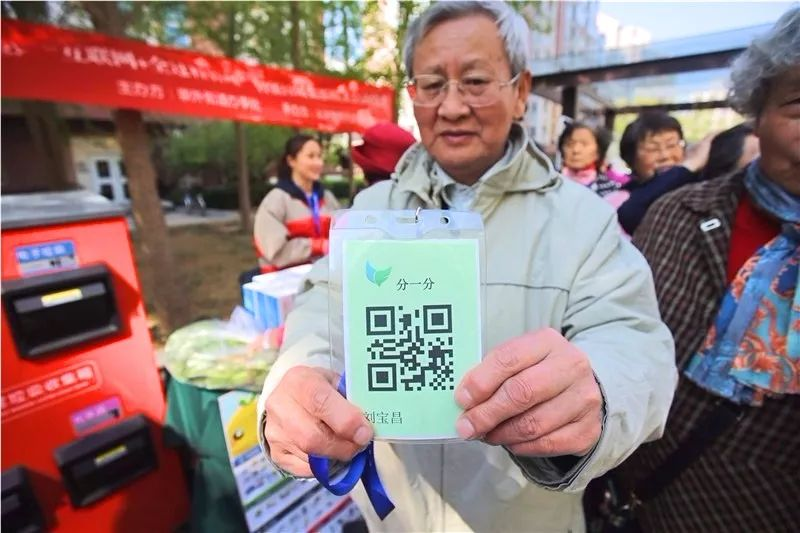
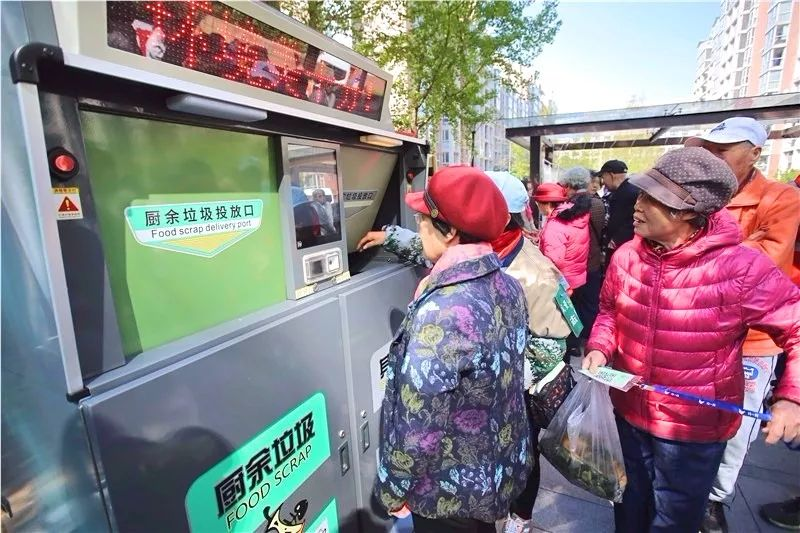
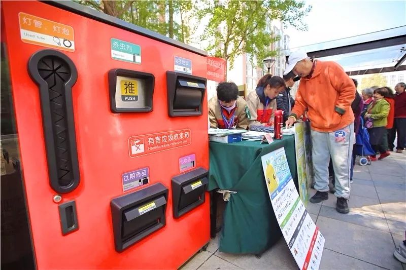
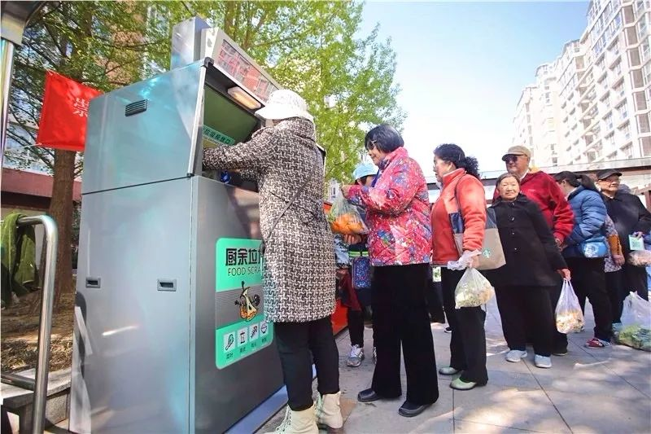

新鲜！智能垃圾分类箱走进东城社区
来源：北京东城
垃圾分类工作一直走在全市前列的崇外街道又出新招。昨天，东城区首个智能垃圾分类箱亮相新怡家园社区。
两个垃圾箱的底部都装有称重装置，居民每次投放的垃圾都将进行积分，以便换取相应的礼品。”昨天上午，居民围在智能垃圾分类箱周围，听指导员讲解这个“大家伙”如何使用。指导员介绍，智能垃圾分类箱具有满载警示预警、多用途LED显示屏、智能投放装置、投口防夹手、温度检测、便捷投递灯、定位、液晶宣传大屏、臭氧杀菌、外挂式灭烟盒等多种功能。
厨余垃圾与其它垃圾分别配有一个240升的垃圾桶，当垃圾桶容量达到上限时，警示灯会亮起，提示居民不要再投放了。同时，后台监控人员会安排人来换桶。每天晚上下班之前，工作人员也会对垃圾桶进行检查，如果容量满载或是即将满载也会换桶。
智能分类垃圾桶的投放分为三种方式：
下载手机APP“分一分”，完成注册后即可扫码，进行垃圾投放并积分。
针对使用手机不便的人群，先去居委会登记，制作二维码标牌，进行垃圾投放并积分。
赶时间、没有积分换礼需求的人群，可以直接按键投放垃圾。
记者了解到，崇外街道垃圾分类全过程监管系统去年6月上线。通过分类垃圾投放、分类收集、分类运输、分类处理的全流程数据采集，运用计量称重、收运监管异常报警的管理手段，结合街道多部门执法联动的管理机制，构建了崇外街道垃圾分类全流程监管系统。
